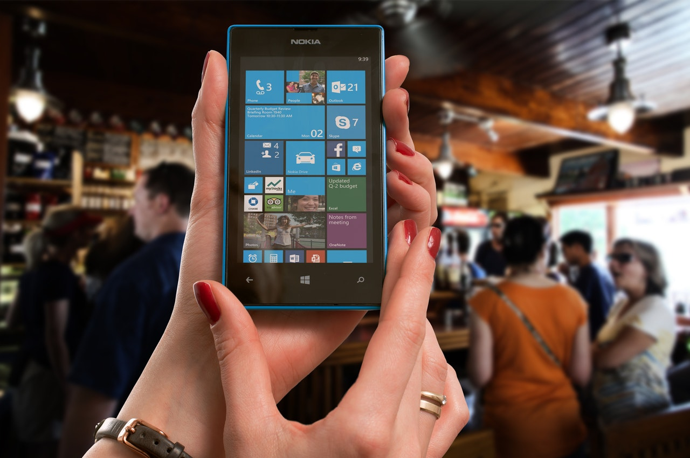

Indonesia Messenger (Imes), Layanan Pesan Instan dengan Cita Rasa Nusantara Posted on March 2, 2017
Ditulis oleh Beritanet.com 07 Maret 2015 09:47:03

Indonesia kini punya senjata baru untuk turut bertarung di pasar layanan pesan instan. Namanya adalah Indonesia Mesengger atau disingkat Imes. Sebagai pendatang baru di jagad layanan pesan instan, Imes pun menghadirkan jurus khusus untuk memikat pengguna. Sebagaimana disampaikan Sonny J Tendean, Managing Director PT Gobsindo Utama, Imes berbeda dengan layanan serupa. Sebagai aplikasi bercita rasa lokal, Imes mengusung konsep nasionalisme dan mengklaim memiliki keunggulan yang tidak dihadirkan platform lain. “Kami cukup optimistis produk kami ini dapat berbicara di kancah persaingan media sosial di Indonesia. Karena selain mengusung konsep nasionalisme, Imes juga memiliki banyak keunggulan yang konsumen tidak dapatkan dari platform sejenis,” tandasnya dalam peluncuran Imes di Jakarta, Sabtu, (28/2). Dikatakan jika Imes mampu mentransfer file ke sesama penggunanya hingga 250 MB. Imes diklaim mampu menambahkan teman hingga 2 ribu anggota. Di samping itu, Imes juga hadir sebagai paket komplet mengkombinasikan chatting, microblogging serta sebagai media sosial. Sejauh ini, Imes baru bisa digunakan pada perangkat Android. Anda bisa mengunduhnya secara gratis di Google Play Store. Meski demikian, Sonny mengungkapkan aplikasi ini akan menyambangi platform lain seperti Windows dan iOS. Posted: 07 Maret 2015 09:47:03 by IY**** BeritaNet.com | Dilihat 576 kali
Tak Ingin Ketinggalan, Microsoft Kini Rilis Aplikasi Skype Lite
Ditulis oleh Handayani 24 Februari 2017
Aplikasi versi ringan atau yang biasa disebut dengan tambajan “Lite” saat ini nampaknya masih menjadi favorit bagi sebagian pengguna, mengingat pengguna perangkat segmen entry-level masih banyak yang mengandalkan aplikasi versi ringan tersebut. Beberapa aplikasi yang memiliki versi Lite di antaranya seperti Facebook, Line, dan yang baru-baru ini diperkenalkan Google adalah YouTube Go yang dapat menyimpan dan berbagi video secara online. Kini, seakan tidak ingin ketinggalan, Microsoft pun disebut-sebut juga akan menghadirkan aplikasi ringan, yang kali ini bernama Skype Lite. Skype Lite merupakan versi ringan dari aplikasi Skype standar. Lalu, apa saja fitur yang dimiliki oleh aplikasi ringan ini? Tentu perbedaan utama dari versi Lite ini dengan versi standar adalah pada penggunaan data ketika melakukan panggilan. Aplikasi ini memiliki ukuran sekitar 13MB yang dapat bekerja meski berdada di jaringan 2G atau saat koneksi tidak stabil. Aplikasi Skype Lite mengandalkan fitur voice-calling sebagai sarana telekomunikasi untuk negara-negara berkembang yang memiliki koneksi jaringan internet cukup lambat. Saat ini Microsoft menargetkan Skype Lite untuk dihadirkan di negara berkembang seperti India, yang diketahui masih memiliki koneksi internet lambat. Tak hanya hemat data, aplikasi ini juga hemat penggunaan daya, sehingga tidak akan menguras daya perangkat pengguna. Selain itu, aplikasi ini juga bisa berjalan lancar pada perangkat dengan OS Android lama. Adapun untuk video call, terdapat pilihan untuk mengurangi konsumsi data yang akan menghemat penggunaan data. Menariknya, Microsoft masih membenamkan fitur SMS dan memberikan sembilan pilihan bahasa regional. Meski saat ini Microsoft baru membidik India untuk perangkat ini, namun tidak menutup kemungkinan bahwa Microsoft juga akan menghadirkan perangkat ini di negara-negara lainnya.
Tak Ingin Ketinggalan, Microsoft Kini Rilis Aplikasi Skype Lite
Ditulis oleh Ikhsan P, tanggal 20 Maret 2017
Aplikasi versi ringan atau yang biasa disebut dengan tambajan “Lite” saat ini nampaknya masih menjadi favorit bagi sebagian pengguna, mengingat pengguna perangkat segmen entry-level masih banyak yang mengandalkan aplikasi versi ringan tersebut...Lanjutkan Baca